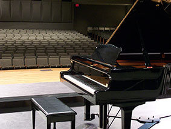
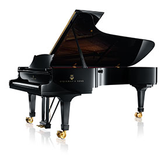
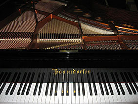
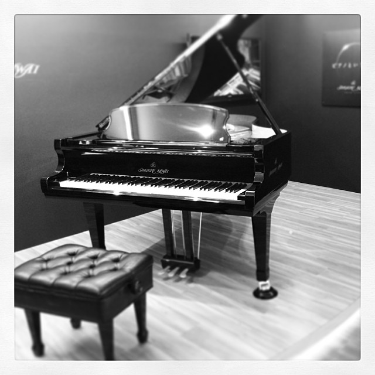

Während früher noch tatsächlich namhafte Klavierbauer existierten und dies noch relevant war, sind heute mehr die Marken und Hersteller wichtig. Häufig tragen diese auch noch die Namen von alten und namhaften Klavierbauern.
Hier sollen die wichtigsten bzw. größten Klavierhersteller der heutigen Zeit aufgelistet und in aller Kürze beschrieben werden. Konkret sind das:
Die Liste und deren Reihenfolge ist eine subjektive Ansicht des Autors. Andere, auch bessere Klaviermarken (z.B. Fazioli, Feurich, Blüthner, Bechstein) wurden weggelassen, weil sie sehr teuer und daher für die Mehrheit der Klavierspielerinnne und -spieler nicht relevant sind.| Gründung: | 1887 |  |
| Hinweise: |
Yamaha gehört heutzutage zu den Standards. Da Yamaha einerseits eine hohe Qalität hat, einen klaren Klang und ein ziemlich gutes Preis/Leistungs-Verhältnis hat, ist diese Marke besonders bei Musik(hoch)schulen sehr beliebt. Der größte Konzertflügel CFX wurde erst kürzlich durch den CX7 ersetzt. Yamaha besticht durch harten Anschlag und klaren Klang. Kritisiert wird die mangelnde Wärme und tiefen Farbtönen. Besonders beliebt in Asien und Europa. |
|
| Website: | at.yamaha.com |
| Gründung: | 1853 |  |
| Hinweise: |
Steinway zählt als absoluter Klavierstandard weltweit, besonders der größte Konzertflügel Steinway-D-Flügel. Praktisch alle E-Pianos, Synthesizer usw. arbeiten mit Samples aus dem Steinway-D. Hat ebenso wie Yamaha einen klaren Klang, aber etwas wärmer und moderner. Wird bevorzugt in Amerika benutzt. |
|
| Website: | eu.steinway.com/de |
| Gründung: | 1828 |

Licence Public Domain
|
| Hinweise: |
Das in Wien gegründete Unternehmen Bösendorfer besitzt nahezu legendenstatus. Für viele gilt der größte Konzertflügel, der Bösendorfer-Imperial, als der beste Flügel überhaupt Der Bösendorfer Imperial zeichnet sich neben seiner besonders hohen Qualität auch durch einen erweiterten Tonumfang aus: Er ist der einzige Flügel mit 97 Tasten (8 Oktaven) und war bis 1990 der längste produzierte Flügel. Er ähnelt von seinem Klangbild einem Kawai, jedoch mit besserer Mechanik, vollerem Klang und etwas härterem Tastenanschlag. |
|
| Website: | www.boesendorfer.com |
| Gründung: | 1927 |  |
| Hinweise: |
Kawai zählt im Bereich der qualitativeren Klaviere zu den Preiswerteren. Das liegt an seinem zeitweise schlechten Ruf (bezogen auf Qualität), der noch heute den Preis etwas drückt. Aufgrunddessen hat Kawai 2012 eine Submarke "Shigeru Kawai" gegründet, welche besondere Qualität besitzt und mit den Top-Instrumenten anderer Klaviermarken mithalten kann. Kawai Klaviere klingen wärmer aber gleichzeitig dumpfer, da der Tastenanschlag weicher ist. Während die Wärme und der volle Klang häufig gelobt wird, wird der weiche Klang von manchen als gut und anderen als schlecht empfunden. |
|
| Website: | www.kawai.de |